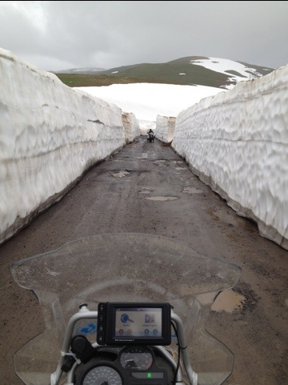

Georgia, Batumi-Borjomi “otsetee”
2 kommentaari8 tundi 200 km. “Veidi” väsinud. Batumi elanike arvamused sellest teest olid: “Seal murravad jalakäijad jalad ja upuvad akvalangistid” kuni ” maailma ilusaim tee” ..
Ilus. Kuradi võimas. Palju mägiojade ületusi, vihma, lund ja metsikult ilusaid mägesid. Vaadake pilte.
Hiljem lisatud täpsem kirjeldus:
Valisime Batumist Borjomi’ sõiduks väiksema tee üle mägede. Selle tee olude kohta olid kohalikud täiesti vastukäivatel arvamustel. Osade arvates oli see täitsa korralik tee mis peaks olema Hummeriga läbitav. Teised arvasid, et sel teel murravad isegi mägikitsed oma jalad ja seal me lumme upume. Tundus põnev ja sobiv. 100 km kõige raskemat, enamasti katteta, aukude ja mööda teed jooksvate sulaojakestega osa sõitsime kuskil 6 tundi. Tee raputas korralikult ja Sveni tsikkel pisut lagunes. Tagumist porikat enam ei ole (mis ongi ägedam) ja Kamazi meestelt saime uue raamipoldi. Mäekurul ca 2000 m peal oli lund juba päris palju ning tipus tähistas teede taasühendamist jommis seltskond lint-traktorite ja maastiku-veoautodega. Selgus, et nad olid just jõudnud otsad kokku tõmmata ja tee oli just avatud. Laskumisel sadas vihma, panime kilekombed peale. Päris mitu oja oli vihma tõttu kõrgeks tõusnud ja uhusid täega üle tee. Ületamised läksid enam-vähem. Üks kukkumine oli, aga mootorisse vesi ei läinud. Õhtul õnnestus Borjomi ainsas söögikohas kohalike bandiitidega häid suhteid hoida (jõime saadetud veinikannu korraga põhjani). Nautisime pisut kohalike noorte rahvustantsu ja ööbisime veidras rutsiaegses sanatooriumis protseduure võtmata. Borjomi jättis natuke nukra mulje. Mmaa seest tuleb küll kulda kuid kohalik kogukond sellest kuigipalju kasu ei saa. Allikate juures renoveeritakse paari üksikut hoonet, aga kogu linna hiilgus on tuhmunud, inimesed mornid ja tohutult suured nõukogude ajast pärit tondilossid mõjuvad väga rusuvalt veel ilmselt kaua aega.

Batumi
kommentaare poleKontrastid on nii suured, et see tekitab ebamäärase ja segase emotsiooni mida on raske edasi anda. Eile ööbisime Türgi mägikülas ja täna oleme küll korralikus Batumi hotellis Gruusias kuid turvatunne on taandunud. Batumis ehitab D Trump ulme-kaasaegset pilvelõhkujat otse hruštshovkade kõrvale ja juba valminud ultramoodsate ehituste vahel elavad kohalikud elanikud sovieediaegsetes elamutes. Edasi tuleb teadmatus, mis on natuke hirmutav … Seda alalhoidlikumad oleme. Väga põnevaks läheb.
Põhja-Türgi mägitee
kommentaare poleTegime “lühikese päeva”. Alustasime 8.30 ja lõpetasime pool kaheksa. Superilus loodus, katteta mägiteed Türgi suurimas teekasvatuspiirkonnas. Lõpetasime “alpikülas” lume piiril. Kumm on niiiii tühi ja vihma sajab niiii kõvasti ja nii ilus on, et hale hakkab.
Samsun, Türgi
4 kommentaariOleme Türgist ja türklastest positiivselt üllatunud ja meil on piinlik oma eelarvamuste pärast. Kas Eesti politsei pakub türklasele vabatahtlikult abi? Kõikjal antakse teed nähes, et oled võõras ja liigset närvilisust ei ole isegi 20-miljoni elanikuga Istanbulis. See suur rahvas tundub olevat suuremeelne.
Põhja-Türgi 800 000 elanikuga sadamalinna Samsuni jõudes peatas meid politsei ja pakkus oma eskorti hotelli leidmisel. Homme hommikuks on sellesama korrakaitsjaga kokku lepitud UNICEFi raames orbudekodu külastus. Päev algas kell 6.30 ja km kogunes 700.
Konstantinoopol
kommentaare poleTäna parandas Sven tsiklit. Kuuskandi ja tähikuga väänas kinni lahtitulnud jalatugesid. Vaata ja imesta. Eile murdus kaamera kiivri küljest lahti. Panime Sveni hobusele õli juurde ja pesime paberkaarte Isostari pulbrist. Istanbul, vana nimega Konstantinoopol on Jussi arvates kõige ägedam linn maailmas. Kunstikoolis käies räägiti ajaloos kolm aastat just sellest piirkonnast ja ülejäänud kahel aastal ülejäänud maailmast. Siin kohtuvad kõik mered, kontinendid, kultuurid, rahvad jne. Siin kohtusid kunagi ka Juss ja Eva.
Koos eeslinnadega täna juba ligi 15milj elanikku ja pikkus üle 100 km kõlab parasjagu jubedalt, aga tegelikult on tegemist väga ilusa ja sõbraliku linnaga.
Käisime Gran Bazaaril ja The Guardiani arvates maailma parimas Hammamis.
Salatoje peski. Puhkepäev … jee :)
4 kommentaariPlaanisime Kuldsetel Liivadel teelolemisele vahelduseks ööelu nautida ja järgmisel päeval esimese puhkepäeva teha aga… Varna ööelu koosnes üksikute rumeenlaste poolt vallutatud karaokebaarist ning hüljatud kohvikutest ja niitmata murudega hotellidest. Hommikul oli nii värske olla, et pidasime pool tundi rannas vastu ja otsustasime edasi liikuda. Bulgaaria Musta mere rannik on küll ilus aga omamoodi masendav. Kohutavalt palju pooleliolevaid arendusi. Ehedaks näiteks on Rauni soovitatud Sozopoli Surfers Paradise Bash Beach club, kus viltuste postidega traataia taga kaks buldooserit ranna pinnase segamini olid keeranud ning nüüd nõutult roostetasid. Kallid asjaga seotud arendajad, pankurid, fondimüüjad ja muud exceli tabeli täitjad – need paberil olevad ilusad 3d-joonised ja exceli graafikud reaalses elus ei toimi. Peatage maailm, me tahame maha. Aga see ongi kahjuks kapitalismi pahupool. Kus me töötame palehigis ja tunneme, et teeme midagi väga kasulikku (kuna meile selle eest makstakse), aga ainsaks tulemuseks on pahatihti segikeeratud loodus ja hunnik (parimal juhul) roiskuvat kraami. Sozopoli ja seni Musta mere äärne ilusam paik on ajalooline, poolsaarel paiknev väike vanalinn, kus väikse võõrastemaja leidsime. Homme õhtul võibolla juba Istanbulis.
Rumeenia, Kuldsed Liivad
kommentaare polePäev filmist “Must kass, valge kass”. Kes on näinud, see teab. Kes pole, siis rangelt soovituslik. Maailma parim film. Ja väga ilusad kaadrid.

Moldaavia, Rumeenia
kommentaare poleVeider, et Musta mere lääneserv nii asustamata on. Kaardilolevad teed kadusid vahepeal sootuks. Teede seis oli kohati nii halb, et sõitsime tee kõrval. Ühes natuke keerulisemas kohas kukkus Sveni tsikkel külili. Mingit hoogu ei olnud ja kõik jäid terveks. Üritasime mere äärt pidi otse Rumeeniasse saada aga ilma Moldaaviat läbimata ei ole see hetkel võimalik. Izmailis, kus plaanisime jõge ja piiri ületada, käisime kohalikus kontrabandistide kõrtsis söömas ja sõbrunesime laheda Kasahhist pärit kõrtsiomanikuga. Piiridel läks kiirelt. Hetkel oleme Rumeenias ja homme plaanime rannikut pidi Varnasse jõuda, kus teeme esimese puhkepäeva.

Odessa
kommentaare poleIlmselt ainus kiirtee päev reisil. Ōhtuks jõudsime Musta mere äärde, Odessasse. Sven ütles juba hommikul, et kolmas päev on alati kõige hullem. Terve päev 31 kraadi. No väga hull ei olnud tegelikult. Homsest langeb tempo. Sõidame ümber Musta mere, kuna Venemaa ja Gruusia vahelist piiri ei ole meil hetkel võimalik ületada ja põhja Türgi tundub huvitav ja sinna muidu ilmselt ei satu.
Valgevene ja Ukraina. Lühidalt
kommentaare poleNetiga juba keeruline ja vabandage vigade pärast.
Blog
27.04
Valgevene piiril seisab kümnete kilomeetrite kaupa rekkasid. Kohtasime ainult heatahtlikke inimesi. Üllatavalt heas korras on kõik – täitsa välismaa. Minski hotellid olid täis ja ööbisime koos Lukashenko organiseeritud Süüria sõjapõgenikega võõrastemajas. Hommikul saime teised passid ja kogu jama peale on ainult kaks viisat puudu, olulisemad siiski olemas. Natuke teeme nüüd teekonda ringi. Hetkel on Kaspiani plaan olemas edasi vaatame;)
28.04
Õues 28 kraadi sooja. Puud läksid poole päevaga roheliseks. Ukraina piiril küsis purjus piirivalvur õhtuks raha. Ukraina teed on peaaegu sama jubedad kui Tallinnas. Sven on siin mitmeid kordi käinud ja talle tundub, et Ukraina on mitu sammu tagasi ja Valgevene omal moel edasi liikunud. Õhtul, kui olime juba võõrastemajja registreeunud, läksime tsikleid ümber tõstma kui nurga tagant kaks militsat välja kargas. Pääsesime umbkeelseid mängides. Hetkel Salvador Ashoti juures Kiievi Route66 ja kohe oleme sunnitud lahkuma. Homme Odessa!

{kind=link}
{kind=link}
{kind=link}
{kind=link}
{kind=link}
{kind=link}
{kind=link}
{kind=link}
{kind=link}
{kind=link}